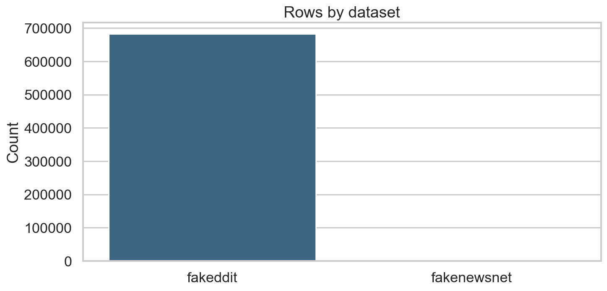
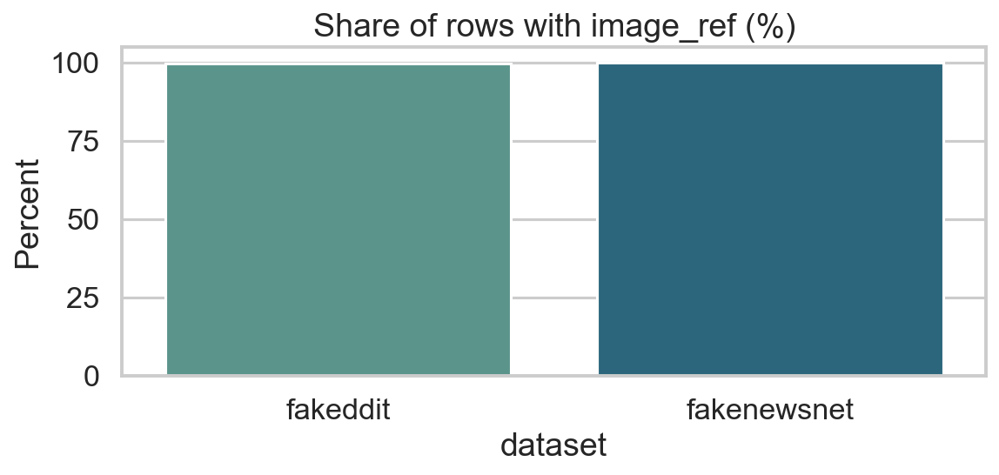
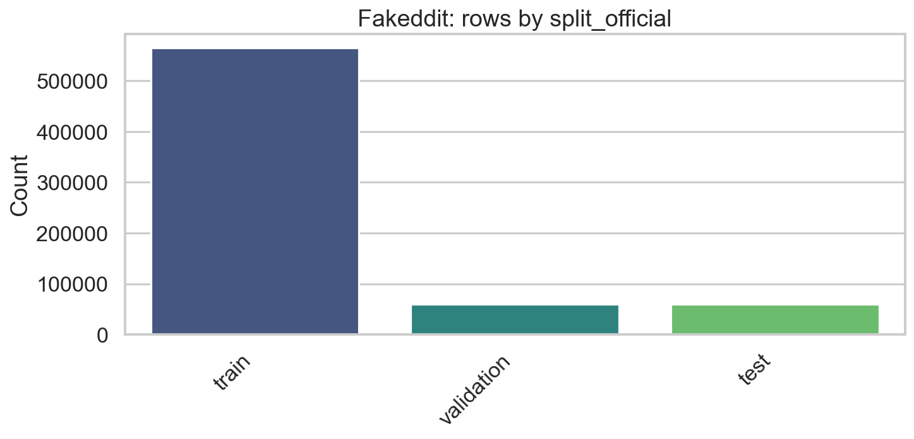
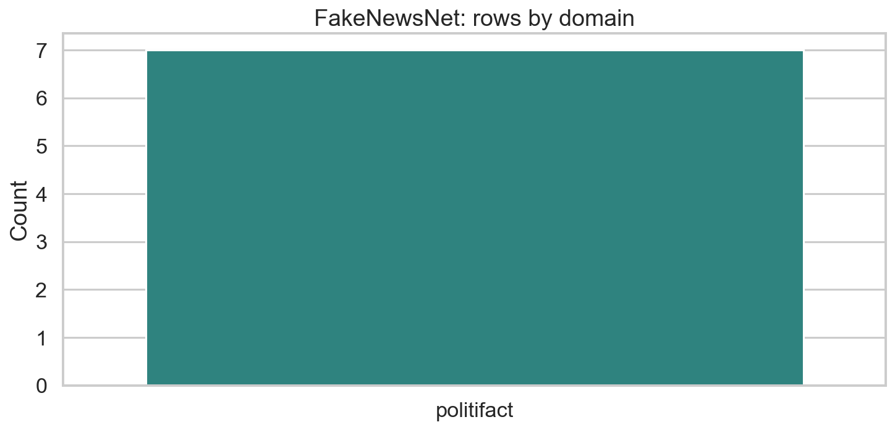
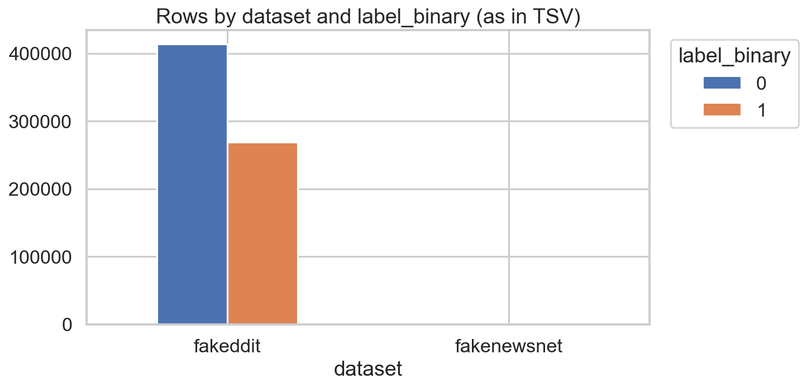
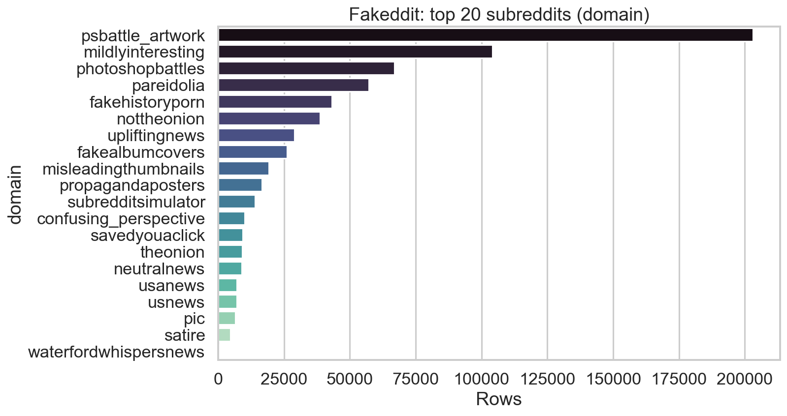

Source: fakenews.tsv — 682,668 rows. Generated by notebooks/fakenews_preprocessing_eda.ipynb (or an older export).
{
"input": "/Users/markphillips/Downloads/MSC Project/data/fakenews.tsv",
"rows_total": 682668,
"by_dataset": {
"fakeddit": 682661,
"fakenewsnet": 7
},
"has_image_ref_by_dataset": {
"fakeddit": 680798,
"fakenewsnet": 7
},
"missing_image_ref_by_dataset": {
"fakeddit": 1863,
"fakenewsnet": 0
},
"fakeddit_top_subreddits": {
"psbattle_artwork": 203139,
"mildlyinteresting": 104262,
"photoshopbattles": 66983,
"pareidolia": 57255,
"fakehistoryporn": 43191,
"nottheonion": 38693,
"upliftingnews": 29054,
"fakealbumcovers": 26224,
"misleadingthumbnails": 19301,
"propagandaposters": 16705
}
}





